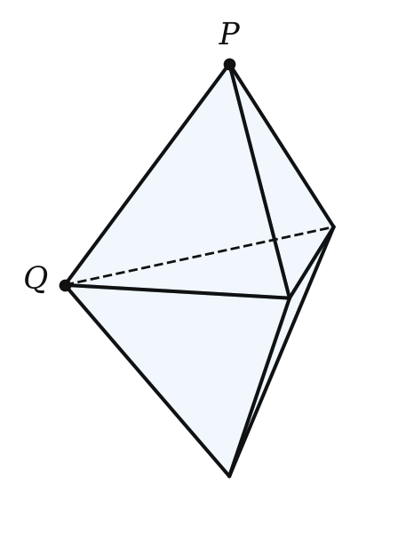
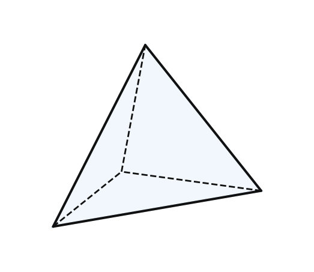
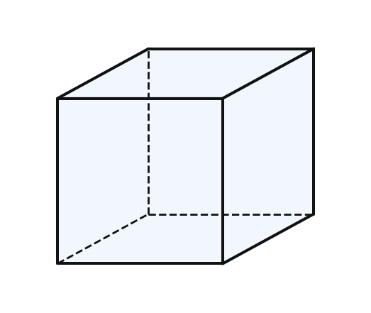
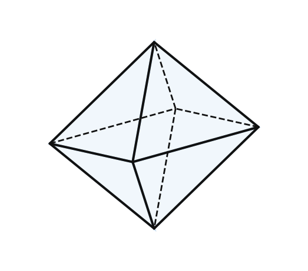
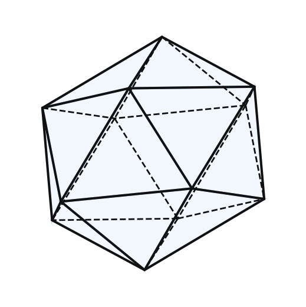
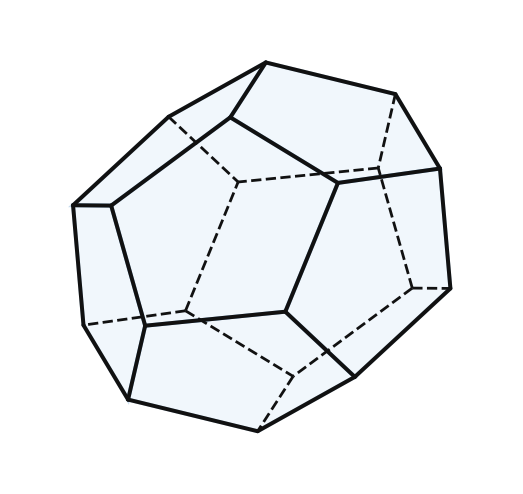
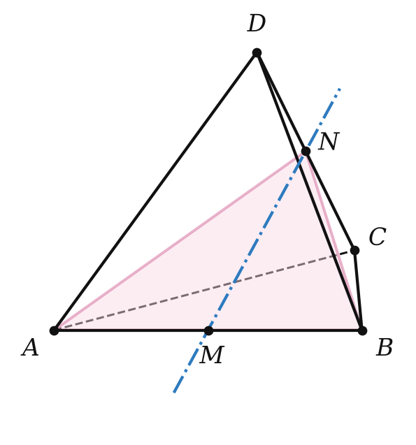
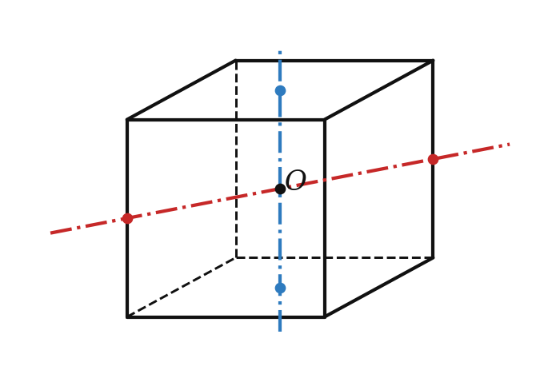

Теория
Какой многогранник называют правильным
Правильный многоугольник — это многоугольник, у которого все стороны и все углы равны. Таких многоугольников бесконечно много: треугольник, квадрат, пятиугольник, … Попробуем перенести идею в пространство: многогранник «максимально одинаковый» со всех сторон. Неожиданно окажется, что таких многогранников всего пять.
Выпуклый многогранник называется правильным, если все его грани — равные правильные многоугольники и в каждой его вершине сходится одно и то же число рёбер.
Зачем второе условие? Склей две правильные треугольные пирамиды с равными рёбрами по основанию (рисунок). Все шесть граней — равные правильные треугольники, многогранник выпуклый, но в вершине P сходятся 3 ребра, а в вершине Q — 4. Он не «одинаковый со всех сторон», и правильным его не считают.

Почему правильных многогранников только пять
Вспомни свойство выпуклого многогранника (урок 12): сумма плоских углов при каждой вершине меньше 360°. В вершине сходятся по крайней мере три грани. Переберём, какими могут быть грани.
| Грань | Угол грани | Граней в вершине | Сумма углов | Многогранник |
|---|---|---|---|---|
| треугольник | 60° | 3 | 180° | правильный тетраэдр |
| треугольник | 60° | 4 | 240° | правильный октаэдр |
| треугольник | 60° | 5 | 300° | правильный икосаэдр |
| треугольник | 60° | 6 | 360° — нельзя | — |
| квадрат | 90° | 3 | 270° | куб (гексаэдр) |
| квадрат | 90° | 4 | 360° — нельзя | — |
| пятиугольник | 108° | 3 | 324° | правильный додекаэдр |
| пятиугольник | 108° | 4 | 432° — нельзя | — |
| шестиугольник | 120° | 3 | 360° — нельзя | — |
У правильного n-угольника при n ≥ 6 угол не меньше 120°, и даже три грани дают сумму ≥ 360°. Значит, гранями могут быть только треугольники, квадраты и пятиугольники, и возможны лишь пять случаев. Каждый из них действительно существует — это пять правильных многогранников.





| Многогранник | Грани | Г | В | Р | Рёбер в вершине |
|---|---|---|---|---|---|
| тетраэдр | треугольники | 4 | 4 | 6 | 3 |
| куб | квадраты | 6 | 8 | 12 | 3 |
| октаэдр | треугольники | 8 | 6 | 12 | 4 |
| додекаэдр | пятиугольники | 12 | 20 | 30 | 3 |
| икосаэдр | треугольники | 20 | 12 | 30 | 5 |
Как получить эти числа без модели: если граней Г и каждая — n-угольник, то Р = nГ / 2 (каждое ребро в двух гранях). Если в вершине сходится q рёбер, то В = 2Р / q. Например, у икосаэдра Р = 3 · 20 / 2 = 30, В = 2 · 30 / 5 = 12. И везде В − Р + Г = 2 — теорема Эйлера.
Названия греческие: «тетра» — четыре, «гекса» — шесть, «окта» — восемь, «додека» — двенадцать, «икоса» — двадцать (граней). Их ещё называют телами Платона.
Не путай: у додекаэдра 12 пятиугольных граней, а у икосаэдра 20 треугольных. Подсказка: «додека» = 12, как дюжина.
«Правильная треугольная пирамида» и «правильный тетраэдр» — не одно и то же. У правильной пирамиды боковое ребро может отличаться от стороны основания; правильный тетраэдр — частный случай, когда все шесть рёбер равны.
Элементы симметрии правильных многогранников
Правильные многогранники — самые симметричные тела. Посчитаем их центры, оси и плоскости симметрии (определения — с прошлого урока; ось — это симметрия относительно прямой, т. е. поворот на 180°).


Правильный тетраэдр. Центра симметрии нет. Осей симметрии три — прямые через середины противоположных рёбер (пар противоположных рёбер три). Плоскостей симметрии шесть — каждая проходит через ребро и середину противоположного ребра (рёбер шесть).
Почему плоскость ABN (N — середина CD) — плоскость симметрии. Медианы AN и BN правильных треугольников ACD и BCD перпендикулярны к CD, значит, CD ⊥ (ABN) по признаку, и плоскость проходит через середину N отрезка CD. Следовательно, C и D симметричны относительно (ABN), а A и B лежат в ней. Вершины переходят в вершины — тетраэдр переходит в себя. ∎
Куб. Центр симметрии — точка пересечения диагоналей. Осей симметрии девять: три — через центры противоположных граней, шесть — через середины двух противоположных рёбер, не принадлежащих одной грани. Плоскостей симметрии девять: три — через середины четырёх параллельных рёбер, шесть — через пары противоположных рёбер (диагональные сечения).
Правильный октаэдр — так же, как куб: центр, 9 осей, 9 плоскостей (центры граней куба — вершины октаэдра, поэтому их симметрии совпадают). Икосаэдр и додекаэдр тоже связаны так же и имеют центр симметрии, по 15 осей и по 15 плоскостей симметрии.
| Многогранник | Центр | Осей | Плоскостей |
|---|---|---|---|
| тетраэдр | нет | 3 | 6 |
| куб | есть | 9 | 9 |
| октаэдр | есть | 9 | 9 |
| додекаэдр | есть | 15 | 15 |
| икосаэдр | есть | 15 | 15 |
Разбор примеров
У правильного многогранника 12 граней, все — правильные пятиугольники, в каждой вершине сходится 3 ребра. Найди число рёбер и вершин и проверь теорему Эйлера.
Р = 5 · 12 / 2 = 30, В = 2 · 30 / 3 = 20. Проверка: 20 − 30 + 12 = 2. Это додекаэдр.
Ребро правильного октаэдра равно 2. Найди площадь его поверхности.
Октаэдр — 8 правильных треугольников со стороной 2, площадь каждого (√3/4) · 4 = √3. S = 8√3.
Ребро правильного октаэдра равно 3√2. Найди расстояние между его противоположными вершинами.
Четыре «средние» вершины октаэдра образуют квадрат со стороной 3√2 (все рёбра равны, а противоположные вершины симметричны относительно центра). Его диагональ 3√2 · √2 = 6. Две оставшиеся вершины лежат на перпендикуляре к плоскости квадрата через его центр O, и каждая удалена от вершин квадрата на 3√2. Из прямоугольного треугольника: расстояние от вершины до O = √(18 − 9) = 3, а между противоположными вершинами — 6 (столько же, сколько диагональ квадрата).
GeoGebra
- Tetrahedron((0,0,0),(2,0,0))
правильный тетраэдр - Dodecahedron((0,0,0),(2,0,0))
правильный додекаэдр - Icosahedron((0,0,0),(2,0,0))
правильный икосаэдр — покрути и найди вершину, где сходятся 5 треугольников - Net(Icosahedron((0,0,0),(2,0,0)), t)
развёртка икосаэдра с ползунком t
Задачи урока
Реши в тетради, к каждой задаче — чертёж. Разберём на занятии.
Тест к уроку
Домашнее задание
Задачи Д1–Д6 ниже. Выучить определение правильного многогранника, доказательство того, что их только пять, и таблицу элементов симметрии. По желанию — склеить из бумаги октаэдр или икосаэдр по развёртке.